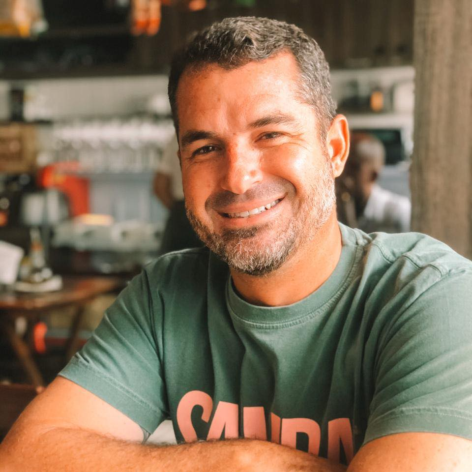

Sobre a InovaSurf

A InovaSurf é uma iniciativa de um surfista apaixonado pelo esporte para surfistas que desejam ter evolução constante no surf.
O surf é um esporte muito complexo. "Nosso objetivo é auxiliar surfistas a entender melhor sobre: Equipamentos, métodos de treinamento, estratégias de desenvolvimento de suas habilidades e técnicas de surf".
Nossa missão é: "Propocionar evolução constante aos surfistas, melhorando o desempenho do seu surf".
Sou Sérgio Varejão, surfista desde 1990, profissional de educação física e pós graduado em treinamento esportivo. "O Surf me motiva a estar sempre em busca de novos métodos de treinamento e técnicas de biomecánica para melhorar o desempenho na água".
Sempre gostei de compartilhar conhecimento, ajudar amigos e conhecidos a melhorar seu desempenho no surf. "A final de contas, todos nos aprendemos durante esse processo".
Nessa pagina tambem vamos falar sobre experiências de viagens, preparação física para algumas caracteristicas de mares e algumas dicas sobre equipamentos.
É um espaço para desfrutar das mais variadas experiências com o surf e suas adversidades.
Surf Trip
"Os surfistas são os nomades modernos, estamos sempre em busca da onda perfeita".


 Costa Rica, Playa Hermosa. Foto Shifi.
Costa Rica, Playa Hermosa. Foto Shifi.
Quando planejamos uma surf trip precisamos pensar em todos os aspectos. Primeira coisa caracteristica das ondas, procure saber a condição de swell para o periodo em que esta indo, temperatura da água e etc... Todas essas informações facilitam a sua tomada de decisões.
Dessa forma conseguimos previamente escolher um quiver de pranchas que normalmente não pode passar de três pranchas, pois, o custo do envio e a logística local pode ser problemática, Planejar a preparação física e etc...


 Peru, El Faro.
Peru, El Faro.
Na primeira vez que fui ao Peru, fui surpreendido pela compania aérea com um custo 3 vezes maior do que o da minha passagem só para transportar minhas duas pranchas, mesmo estando em uma capa só, essas coisas acontecem. Por isso precisamos planejar antecipadamente e levar o minimo necessário.
Surf Video
Filmes de surf são excelentes para melhorar técnicas e estilo. Sempre que puder observe os melhores surfistas, veja os movimentos do corpo, cavadas, braços e posicionamento.